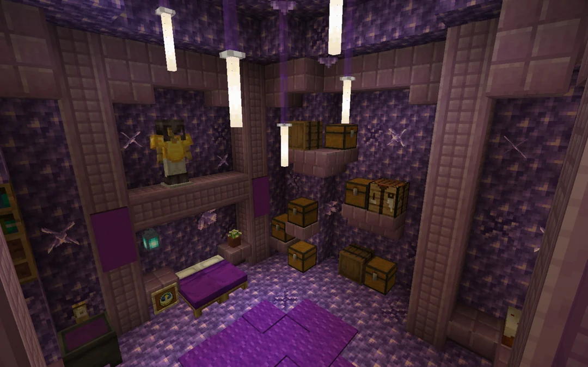
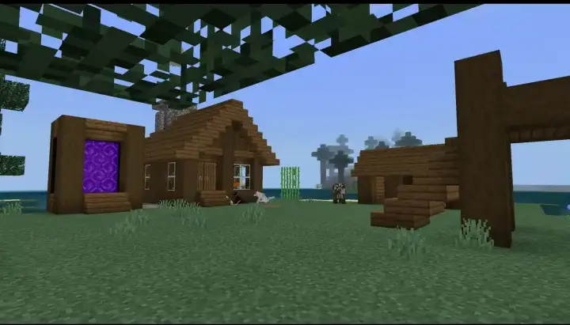
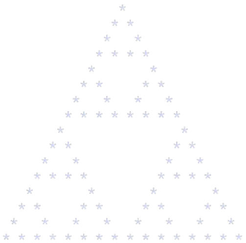
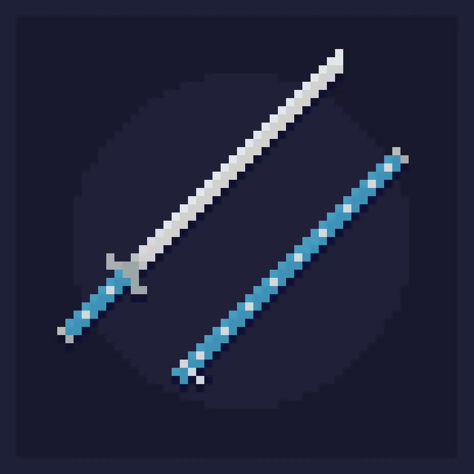

I started programming in 2020 and I'm still on the road to learning more. My current focus is compilers, interpreters and emulators. In the past, I have also created my own (barely functional) OS, bots for platforms like Discord and many more projects. I mainly program in Rust and Python, but have also used Gleam, Ruby, C++, JS/TS, Lua and more. I also have some knowledge of BEAM bytecode and OpenQasm 2.0.
Outside of programming, I have a lot of other interests such as collecting gemstones, playing video games, listening to bad music and watching anime. I also like mallards, funny hats and the ISO 8601 time format.




